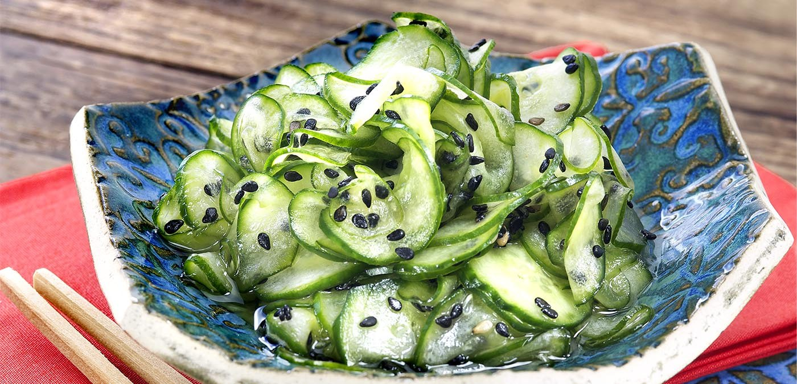

<!DOCTYPE html>
<html lang="en"></html>
<head>
  <meta charset="utf=8">
  <title>Sunomono</title>
</head>
<body>
  <h1>Sunomono (Japanese Cucumber Salad)</h1>
  
  <h4>Description</h4>
  <p>Japanese sunomono is delicious and simple to make with thinly sliced cucumbers in a sweet
     and sour vinegar dressing for a refreshing salad or side dish.</p>
  <h4>Ingredients</h4>
  <ul>
    <li>2 large cucumbers, peeled</li>
    <li>⅓ cup rice vinegar</li>
    <li>4 teaspoons white sugar</li>
    <li>1 ½ teaspoons minced fresh ginger root</li>
    <li>1 teaspoon salt</li>
  </ul>
  <h4>Steps</h4>
  <ol>
    <li>Cut cucumbers in half lengthwise and scoop out any large seeds. Slice crosswise into 
      very thin slices.</li>
    <li>Place vinegar, sugar, ginger, and salt in a small bowl; mix well to combine. Add 
      cucumber slices and stir to coat.</li>
  </ol>
</body>